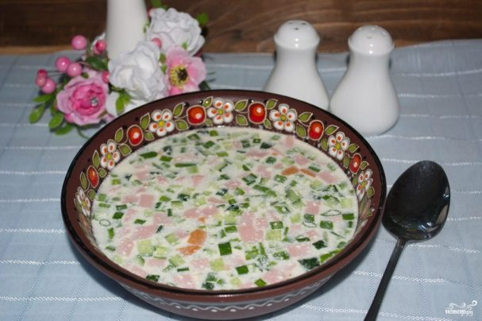

Homepage
Russian Cuisine
Okroshka (Chilled Russian Summer Soup)
This soup is nothing fancy, folks. Just a a nice, light, refreshing, cold soup on a hot day. If you don't like buttermilk, please ignore the recipe.

- Servings:2
- Yield:2 servings
- Prep:20 mins
- Additional:30 mins
- Total:50 mins
Ingredients
- 2 cups potatoes - peeled, boiled, and cubed
- 2 hard-cooked eggs, chopped
- 1/2 cup chopped cucumber
- 1/2 cup bologna, cut into pieces
- 1/4 cup finely sliced green onion
- 3 tablespoons chopped radishes (Optional)
- 2 tablespoons chopped fresh dill
- 2 cups buttermilk, or as needed to cover
Directions
- Combine potatoes, eggs, cucumber, bologna, green onion, radishes, and dill in a bowl. Refrigerate until chilled, about 30 minutes.
- Divide mixture between 2 bowls and cover with cold buttermilk to make a soup.
Nutrition Facts
Calories:460
- Protein 23g;
- Carbs 48.2g;
- Fat 19.7g
Check also this:
Pancakes with love from Russia!